|
 |
 |
Puntos de
Inflexión Ecológica
- Cómo funcionan?
- Transformando círculos viciosos a círculos virtuosos
- Ingredientes para el éxito
- Elaboren sus propios Puntos de Inflexión Ecológica
Historias por Región
Historias por Tema
- Agricultura
- Agua y Cuencas
- Bosques
- Ecosistemas Urbanos
- Educación
- Energía
- Negocios
- Pesquerías
- Salud Pública
Videos Cortos
- Salvando un arrecife coral y una pesquería
(Filipinas) - Revitalizando vecindades urbanas con jardines comunitarios
(Nueva York) - Revirtiendo la deforestación tropical con bosques comunitarios
(Thailandia) - Rellenando aguas subterráneas con captación pluvial
(Rajastán, India) - Escapando la trampa de pesticidas
(India)
Explicando el Éxito
- Salvando un arrecife coral y una pesquería
(Filipinas) - Revitalizando vecindades urbanas con jardines comunitarios
(Nueva York) - Revirtiendo la deforestación tropical con bosques comunitarios
(Thailandia) - Rellenando aguas subterráneas con captación pluvial
(Rajastán, India) - Escapando la trampa de pesticidas
(India)

Ecología Humana: Presenta los principios de la ecología humana que sirven de fundamento a los Puntos de Inflexión Ecológica
Tailandia - Provincia Trang - Recobrando los Manglares con Gestión Comunitaria
- Breve: Al oponerse a poderosos intereses para proteger un recurso común, se detonó la regeneración social, económica y pesquera.
- Lea la historia detallada
- Fotos tomadas por Amanda Suutari - Todas las fotos están disponibles para descargarse gratis; favor de atribuir a la fotógrafa y al sitio de Internet.
- Pulse sobre la foto para ver los detalles.

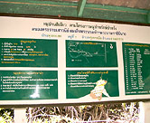
CMF Map and Info

Yadfon and villagers

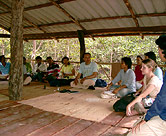
Multi-village meeting

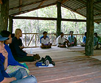
Community engagement

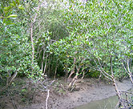
Rebounding mangroves

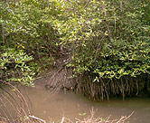
Mangrove root system

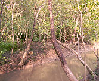
Te Ram village mangroves

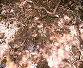
Mangrove soil

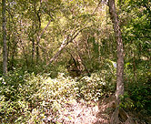
CMF at Thung Dase Village

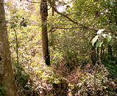
From the boardwalk

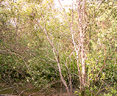
CMF at Thung Dase Village

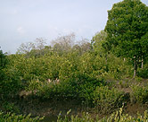
Further inland

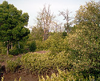
From Thung Dase village

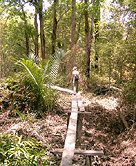
Forest boardwalk